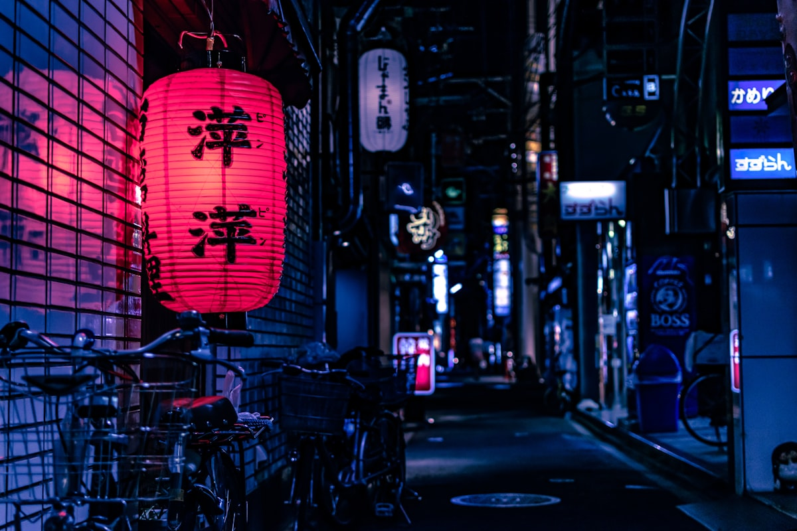
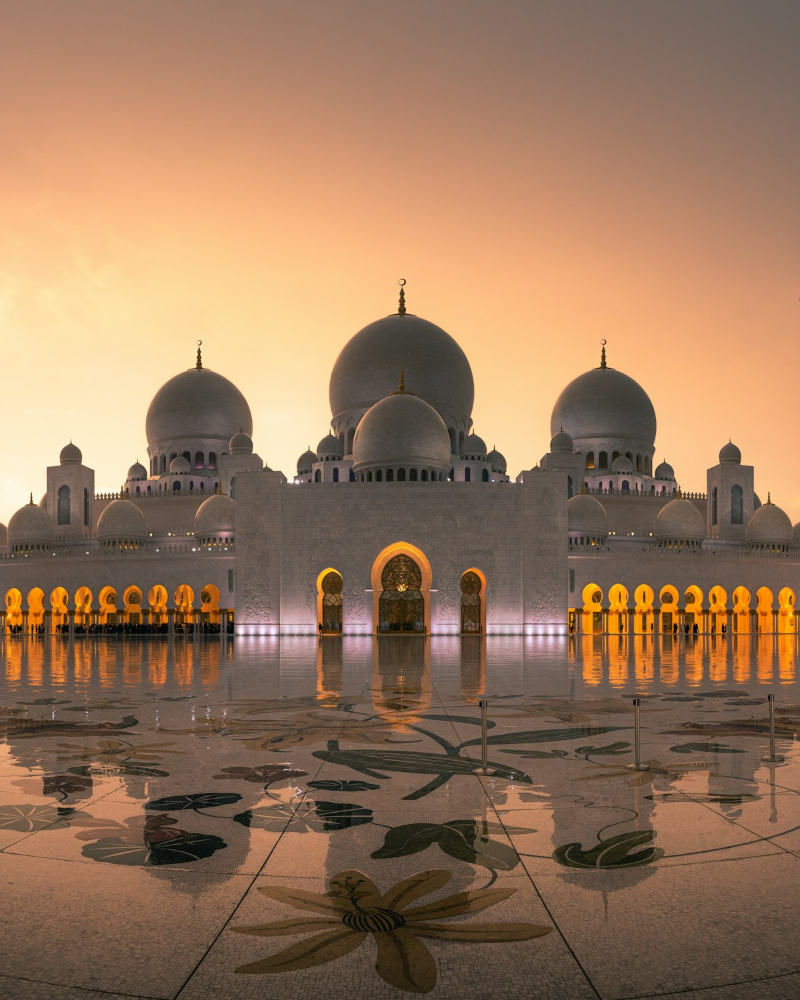
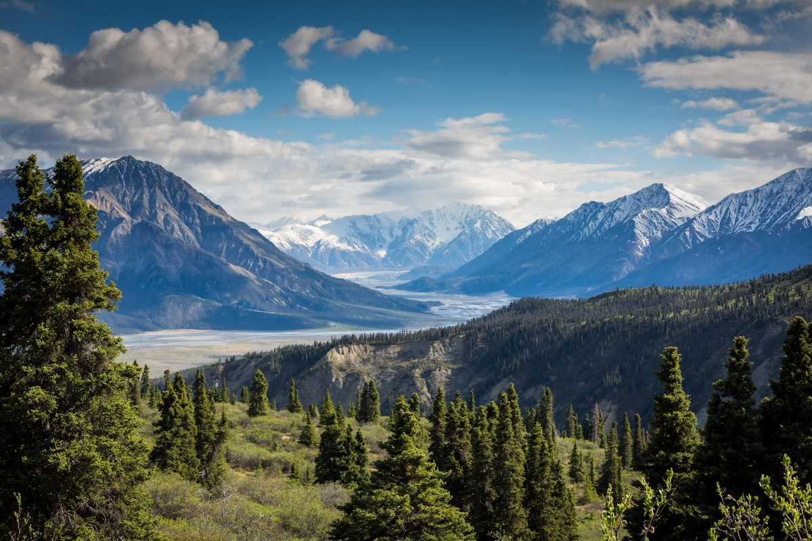
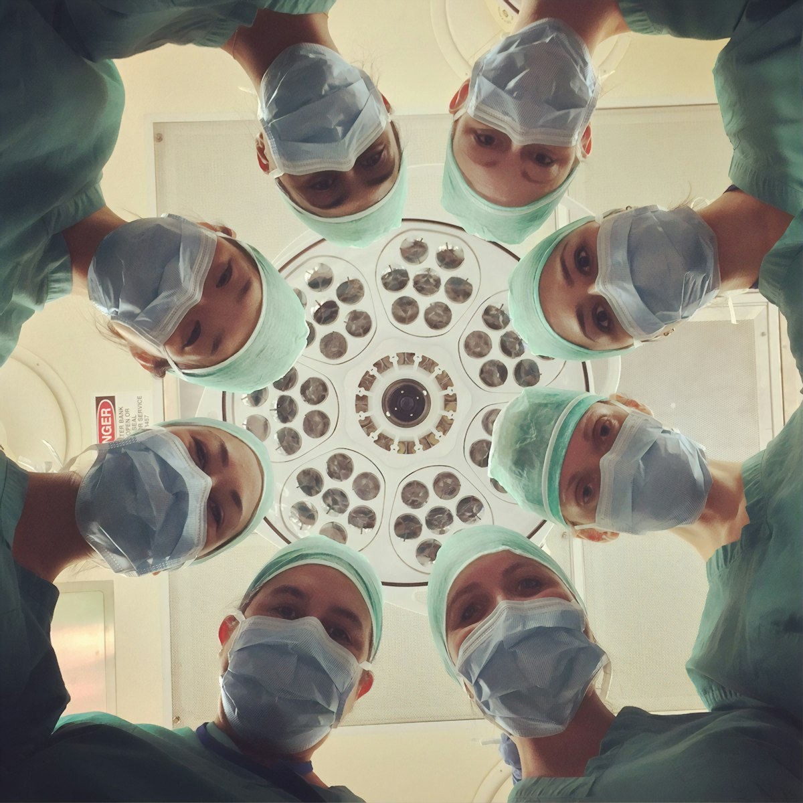
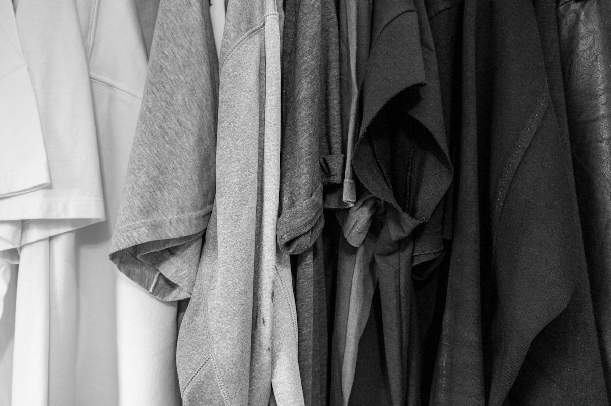

📜 历史价值
皇权象征
太和殿采用的重檐庑殿顶是中国古建筑屋顶等级制度的顶端，非皇家最高正殿不得使用。这一形制在礼制层面直接彰显天子"奉天承运"的权威——屋顶越宏大复杂，代表其使用者的地位越高。太和殿因此成为整个紫禁城乃至全国建筑等级秩序的最高物质表达。
礼制建筑体系
中国古代官式建筑将屋顶形制划分为严格的等级序列：重檐庑殿顶（最高，仅太和殿、太庙等）→ 重檐歇山顶（天安门、保和殿）→ 单檐庑殿顶（配殿）→ 单檐歇山顶（一般殿宇）→ 悬山顶/硬山顶（民用建筑）。每一级别都有严格的使用规定，僭越者将受到法律处罚。
明永乐年间始建
太和殿始建于明永乐十八年（1420年），明成祖朱棣迁都北京后将其作为朝会大殿。此后历经三次重大火灾：1557年、1597年、1679年（清康熙年间）三度被毁重建。现存建筑为清康熙三十四年（1695年）重建，距今已有三百余年。每次重建均基本维持原有规制，体现了皇家建筑传统的稳定性。
世界文化遗产
1987年，故宫博物院被列入《世界文化遗产名录》，成为中国最早列入世遗的建筑遗产之一。故宫占地72万平方米，拥有建筑980余座、房屋8700余间，是世界现存规模最大、保存最完整的古代宫殿建筑群，太和殿是其中规格最高、体量最大的核心建筑。
🏛️ 形制特征
庑殿顶形制
庑殿顶又称"四阿顶"，其屋面由前后左右四个斜坡组成，四面皆有坡水，共有五条脊：一条正脊贯穿屋顶两端，加东南、西南、东北、西北四条垂脊。这种四坡五脊的结构使得建筑从任何角度观看都呈现出庄重对称的立面，加之重檐叠加，气势磅礴，是中国木构建筑形制的集大成者。
重檐制度
重檐是在主体庑殿顶下方再出一圈围廊屋檐（下檐），使整个建筑呈现两层屋檐叠加的形态。下檐通常比主檐出挑更短，坡度更缓，整体效果如同为建筑披上一道宽大的"裙边"。重檐制度不仅增大了屋檐遮雨面积，更通过双层檐口的视觉叠加，大幅提升建筑的体量感与礼仪庄严感。
屋脊走兽
太和殿四条垂脊上各设有十只走兽，加上前端的骑凤仙人，共11只，是故宫所有建筑中走兽最多的，也是全国之最。走兽从前至后依次为：龙、凤、狮、天马、海马、狻猊、押鱼、獬豸、斗牛、行什。每只走兽均有特定寓意，如龙象征皇权、凤象征吉祥、獬豸象征公正、斗牛象征镇水避火。
斗拱出挑比例
太和殿外檐斗拱为七踩单翘三昂，出挑尺度达到柱高的三分之一以上。这一比例在历代官式建筑中极为罕见，体现了清代官式大木作的最高规格。斗拱的出挑深度直接决定了屋檐的悬挑长度，太和殿宽达4.49米的檐口出挑，使建筑在雨天可将台基全面遮蔽，兼具功能与美学的高度统一。
🔧 结构技艺
斗拱构造原理
斗拱由多种标准化构件组合而成：栌斗（坐于柱头的基础斗）→ 华拱（前后方向出挑的拱）→ 泥道拱（左右方向的横拱）→ 下昂（斜向出挑构件，增大悬挑）→ 令拱（最上层横拱）→ 要头（出挑端头）。每一构件尺寸均按"材"（基本模数）严格计算，实现了标准化预制与现场装配。
大木作体系
太和殿采用抬梁式构架：以84根立柱确定平面柱网（面阔11间、进深5间），柱间以额枋连接，柱顶置斗拱，斗拱之上架设大梁，梁上立瓜柱，瓜柱上再架短梁，层层叠加至屋脊。这一"金字塔式"的梁架体系将屋顶数百吨的荷载逐级传递至柱础，最终分散至台基基础。
举折屋面曲线
太和殿屋面并非平直斜坡，而是一条由檐口向脊部逐渐增大坡度的凹曲线，称为"举折"。具体做法是从下至上每步椽架的举高依次增大，形成下缓上陡的动态曲线。这一设计在实用上有利于加速排水（上部陡坡排水快）、减少下部溅水（下部坡缓水流落点远离墙基），在视觉上则呈现出如翼如翔的飞檐动势。
琉璃瓦制作
故宫黄色琉璃瓦以优质高岭土为胎体，成型后初次素烧，再施铅基黄色釉料，经约1300℃高温二次烧制而成。釉面致密光滑，防水性能极佳，且在阳光下呈现富贵的金黄色泽，象征皇家专用（黄色为皇帝专用色）。屋脊、吻兽等特殊构件均为专门烧制的异形琉璃件，每件均可精确咬合，确保屋脊严密防水。
📷 实景影像

宫殿廊道回廊

屋脊走兽列阵

紫禁城夜色

朱红宫墙黄琉璃

宫殿院落内景

宫殿彩绘木构

故宫冬日雪景

角楼护城河倒影

紫禁城全景鸟瞰
庑殿顶飞檐细节

斗拱层叠结构

太和殿琉璃瓦屋顶